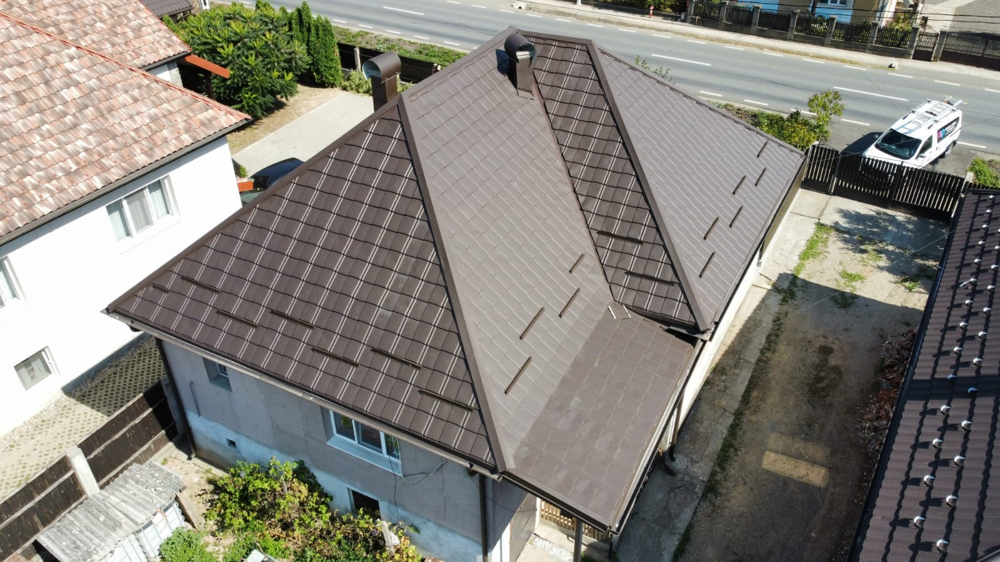

Cum să Alegi Țigla Metalică Potrivită în Moldova
📅 15 Iulie 2026 | ⏱️ 8 minute | 📍 Chișinău, Bălți, Cahul | ✍️ Valmex.md
Alegerea țiglei metalice pentru acoperișul casei tale este una dintre cele mai importante decizii în procesul de construcție sau renovare. În Republica Moldova, unde clima continentală aduce veri călduroase, ierni geroase și precipitații variate, calitatea acoperișului face diferența. Acest ghid complet îți va arăta cum să alegi țigla metalică ideală pentru condițiile din Moldova.
De Ce să Alegi Acoperiș Metalic în Moldova?
Acoperișurile metalice au câștigat o popularitate enormă în Republica Moldova în ultimii ani, și pe bună dreptate. Fie că locuiești în Chișinău, Bălți, Cahul sau în orice alt oraș sau sat din Moldova, un acoperiș metalic oferă numeroase avantaje:
- Durabilitate excepțională — un acoperiș metalic bine montat poate dura 30–50 de ani, rezistând la zăpadă abundentă, grindină și vânt puternic
- Greutate redusă — țigla metalică cântărește doar 4–6 kg/m², reducând sarcina structurală asupra casei
- Varietate de culori și profile — peste 30 de nuanțe disponibile, perfecte pentru orice stil arhitectural moldovenesc
- Montaj rapid — o echipă profesionistă poate acoperi o casă medie în 2–4 zile
- Preț competitiv — raportul calitate-preț este excelent comparativ cu alte materiale


Exemple de acoperișuri metalice montate profesional în Moldova de echipa Valmex.md
Tipuri de Țiglă Metalică Disponibile în Moldova
Pe piața din Republica Moldova găsești mai multe tipuri de țiglă metalică. Iată cele mai populare:
1. Țiglă Metalică Clasică (Profil S)
Cel mai popular tip în Moldova. Profilele în formă de S oferă un aspect tradițional, similar cu țigla ceramică. Este ideală pentru casele cu arhitectură clasică sau neoclasică, foarte răspândită în satele și orașele moldovenești. Prețul pornește de la 120 lei/m².
2. Țiglă Metalică Modernă (Profil R)
Profile mai plate, cu linii moderne. Perfectă pentru casele contemporane și vilele din zonele rezidențiale noi ale Chișinăului. Oferă un aspect minimalist și elegant. Prețul începe de la 140 lei/m².
3. Țiglă Metalică Premium (Profil Roman)
Cel mai sofisticat profil, inspirat de arhitectura mediteraneană. Recomandată pentru casele de lux și pensiunile din zonele turistice ale Moldovei. Prețul pornește de la 180 lei/m².
💡 Sfatul Specialistului Valmex
Pentru majoritatea caselor din Republica Moldova, recomandăm țigla metalică cu profil clasic (S) și grosime de 0,45–0,50 mm. Acest profil oferă cel mai bun raport între estetică, rezistență structurală și preț accesibil.
Tipuri de Acoperire și Rezistența la Clima Moldovei
Clima din Moldova, cu variații mari de temperatură (de la -25°C iarna la +40°C vara), necesită acoperiri speciale:
| Tip Acoperire | Durată de Viață | Preț (lei/m²) | Recomandare |
|---|---|---|---|
| Poliester (PE) | 15–20 ani | 120–160 | Case economice, anexe |
| Plastisol (HPS) | 25–35 ani | 160–220 | Case rezidențiale standard |
| Pural (PU) | 35–50 ani | 220–350 | Case premium, vile |
| Granit (PVDF) | 50+ ani | 300–450 | Proiecte de lux |
Grosimea Tablei — De Ce Contează în Moldova
Grosimea tablei este un factor critic, mai ales în zonele din Moldova expuse la vânt puternic (nordul țării, zonele de stepă). Recomandările noastre pentru diferite regiuni:
- Chișinău și zonele de câmpie — minim 0,40 mm, ideal 0,45 mm
- Bălți și nordul Moldovei — minim 0,45 mm, ideal 0,50 mm (vânt mai puternic)
- Cahul și sudul Moldovei — minim 0,40 mm, ideal 0,45 mm (soare intens, acoperire UV importantă)
- Zone montane (Codri) — minim 0,50 mm (zăpadă abundentă)
Montajul Acoperișului Metalic în Moldova
Echipa Valmex.md execută acoperișuri metalice în toată Republica Moldova, respectând standardele europene:
- Pregătirea șarpantei — verificare structurală, tratament antiseptic, contraliste
- Hidroizolație și vapobarieră — esențială pentru condens în Moldova
- Montajul foliei de difuzie — permite evacuarea umidității, blochează pătrunderea apei
- Lățirea cu OSB sau scândură — la pante mici (< 22°) se folosește placare continuă
- Montajul țiglei metalice — începând de la streașină, cu suprapunere de 15–20 cm
- Finisaje și accesorii — coame, jgheaburi, burlane, ferestre de mansardă
⚠️ Atenție!
Montajul neprofesionist este principala cauză a problemelor cu acoperișurile metalice în Moldova. Alege mereu o echipă cu experiență, portofoliu verificabil și garanție scrisă. Valmex.md oferă garanție 10 ani pentru toate lucrările de montaj.
Cât Costă un Acoperiș Metalic în Moldova în 2026?
Iată un calcul estimativ pentru o casă medie de 150 m² în Chișinău:
- Țiglă metalică (0,45 mm, plastisol) — 150 m² × 180 lei = 27.000 lei
- Hidroizolație și folie difuzie — 150 m² × 25 lei = 3.750 lei
- Accesorii (coame, jgheaburi, burlane) — 4.500 lei
- Montaj profesional — 150 m² × 85 lei = 12.750 lei
- Transport în Chișinău — gratuit
Total estimativ: ~48.000 lei (inclusiv TVA)
Pentru o ofertă personalizată, folosește Calculatorul de Acoperiș Valmex sau contactează-ne direct.
Întreținerea Acoperișului Metalic în Condițiile din Moldova
Pentru a prelungi durata de viață a acoperișului tău metalic, urmează aceste sfaturi:
- Inspecție anuală — verifică după fiecare iarnă, mai ales în zonele cu zăpadă abundentă (Bălți, Edineț, Soroca)
- Curățarea jgheaburilor — de 2 ori pe an, primăvara și toamna
- Îndepărtarea frunzelor și ramurilor — evită acumularea de umiditate
- Verificarea accesoriilor — coame, ventilatoare, ferestre mansardă
- Evitarea zgârieturilor — nu urca pe acoperiș fără echipament adecvat
Concluzie
Alegerea țiglei metalice potrivite pentru casa ta din Republica Moldova nu trebuie să fie complicată. Cu informațiile corecte despre tipuri de profile, acoperiri, grosimi și montaj, poți lua o decizie înțeleaptă care îți va proteja casa zeci de ani. Echipa Valmex.md este alături de tine în toată Moldova — de la Chișinău la Bălți, de la Cahul la Soroca — cu acoperișuri premium, montaj profesional și garanție reală.
🛠️ Ai nevoie de un Acoperiș Metalic în Moldova?
Echipa Valmex.md oferă consultație gratuită și ofertă personalizată pentru orice proiect din Republica Moldova. Sună acum sau solicită ofertă online!
📞 Sună Acum: +373 78 026 212Sau trimite cerere online — răspundem în 30 de minute
Articole similare

Cât Durează un Acoperiș Metalic în Moldova?
Durata de viață a acoperișului metalic, factorii care o influențează și cum să o prelungești în condițiile din Republica Moldova.

Fațade Decorative pentru Case din Moldova
Tencuială decorativă siliconată, panouri AMK și alte soluții moderne pentru fațade în Chișinău și Bălți.

Tot Ce Trebuie să Știi Despre Panourile AMK
Ce sunt panourile AMK, cum se montează și de ce sunt o investiție excelentă pentru fațada casei tale din Moldova.